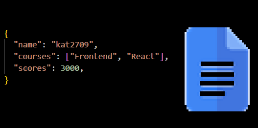
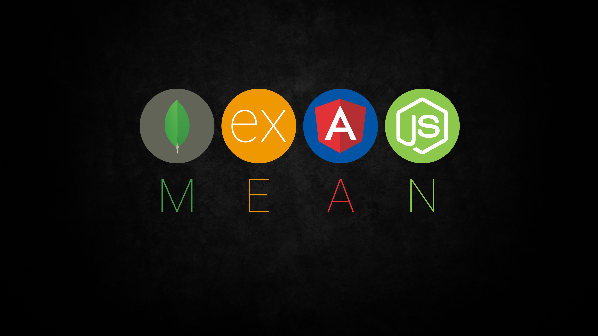
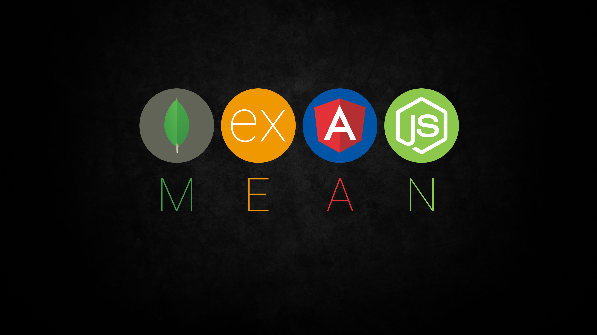

Introduction

What is Mongo DB?
Let's discuss some key concepts:
- Documents.
- Collections.
- Fields.
Documents
Collections
Fields

As frontend developers, why should we consider MongoDB?
- JSON-Like Documents.
- Scalability.
- Performance.
- Flexibility.
JSON-Like Documents:
Scalability:
Performance:
Flexibility:
Use Cases:
- Content Management Systems (CMS).
- Mobile Applications.
- Payments.
CMS:
Mobile Applications:
Payments:
Integration with Web Technologies:
- Node.js
- Express.js
- React, Angular
Node.js:

Express.js:

React, Angular:
 

Ready to dive in? Here's how to get started with MongoDB:
- Installation
- Documentation
- Practice
Installation:
$ brew install mongodb-atlas
$ atlas setup
Documentation:
Practice:
Conclusion.